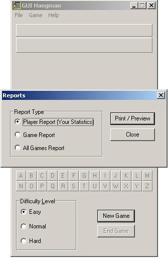

Viewing Reports
Game reports can be viewed by selecting Game | Reports from the main menu. You can only view reports when you are logged in. A new window will pop up letting you choose out of three different types of reports in GUI Hangman.

The Print/Preview button opens up the report. Click on the titles below to see a brief description of each report:
Player Report
Game Report
All Games Report